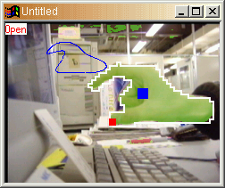
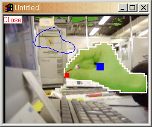
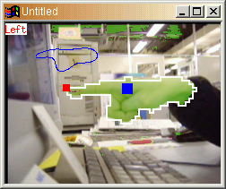

ハンドマウス
ハンドマウスっぽいものを作ってみました。入力画像からOpen, Close, Leftのいずれかを推定し、推定できた場合はその結果を画像の左上に表示します。スクリーンショットを次に示します。



認識の手順の概要は次の通りです。
- 入力画像から肌色の領域を抽出します。色をHS平面に射影して、肌色に近い所を選択します。画像中で肌色と判定した部分は緑色を重ねています。
- 肌色とみなした領域の重心を求めます。画像中の■は肌色領域の重心です。その重心を含む肌色領域の境界（画像中の白色の線）を計算し、その閉曲線を取得します。
- その閉曲線をフーリエ変換して低周波成分を取り出します。画像の左上にある青色の線は、その低周波成分だけを逆フーリエ変換して求めた閉曲線です。
- 事前に3つの閉曲線のパターン（Open, Close, Left）を同様にフーリエ変換して低周波成分を取り出し、登録しておきます。それらと「入力画像から得た閉曲線の低周波成分」との類似度を計算します。
- 最も類似度の高いパターンを決定し、その類似度がある閾値を越えている場合、そのパターンを検出したことにします（このとき入力画像から求めた閉曲線を−45—45度回転させて、何度回転してるかも同時に求めています）。
- 検出したパターンがOpenかCloseの場合、画像の親指の先に相当する位置に■を描画しています（Leftの場合は画像の人挿し指の先に相当する位置）。
実際には手の形状認識というよりも、「影絵」の形状認識という感じです。認識結果の状態をステートマシンで扱い、状態がOpen ➜ Close ➜ Openと変化したときに、■の位置をクリックしたことにすれば、ハンドマウスとして使うことができます。
Pentium 2 (266 MHz) のPCにTVチューナーカード (PCI) を挿し、そのビデオ入力端子にデジカメのビデオ出力をつないだ構成では、15フレーム/秒程度の性能で手形状を認識できました。